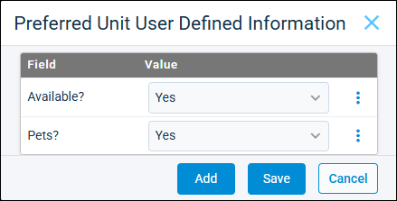

Source: https://rmxhelp.rentmanager.com/Topics/Express/CSH/Prospect-Preferred-Unit-UDFs.htm
Prospect Preferred Unit User Defined Fields (Pop-Up)
User-defined fields (UDFs) are custom fields used to track information that Rent Manager does not track by default. UDFs are available for each entity (e.g., tenant, prospect, property, unit, and so on) throughout Rent Manager. Each UDF has a control type to determine how this data is recorded (e.g., text, numeric, file, and so on) which allows users to enter consistent values regardless of who updates the UDF.
On the Preferred Unit User Defined Information pop-up, you can add, view, and edit unit-type UDFs to help determine the prospect’s preferences and narrow the list of available units. For example, if a prospect needs a unit in a certain school district, you can narrow available units for this prospect by setting their unit preferences to include only units with the desired school district for a School District user-defined field.
Related Privileges
| Group | Privilege | Column |
|---|---|---|
| Tenants/Prospects | Prospects | View, Edit |
For more information, refer to Control User Access.
To view a prospect's Preferred Unit User Defined Information pop-up, go to  arrow_forward Rental Info arrow_forward General arrow_forward Prospects and select a prospect from the list. Then, on the Unit User Defined Information tile, click
arrow_forward Rental Info arrow_forward General arrow_forward Prospects and select a prospect from the list. Then, on the Unit User Defined Information tile, click  .
.

Column Descriptions
The following columns of information display for UDFs.
| Column | Description |
|---|---|
|
Field |
The unique name of this user-defined field. |
|
Value |
The information you track with this UDF. The information you can include depends on the control type selected for the UDF (e.g., drop-down, text, date, and so on). For example, if a UDF has a Date control, only a date within a year can be entered as the value. |